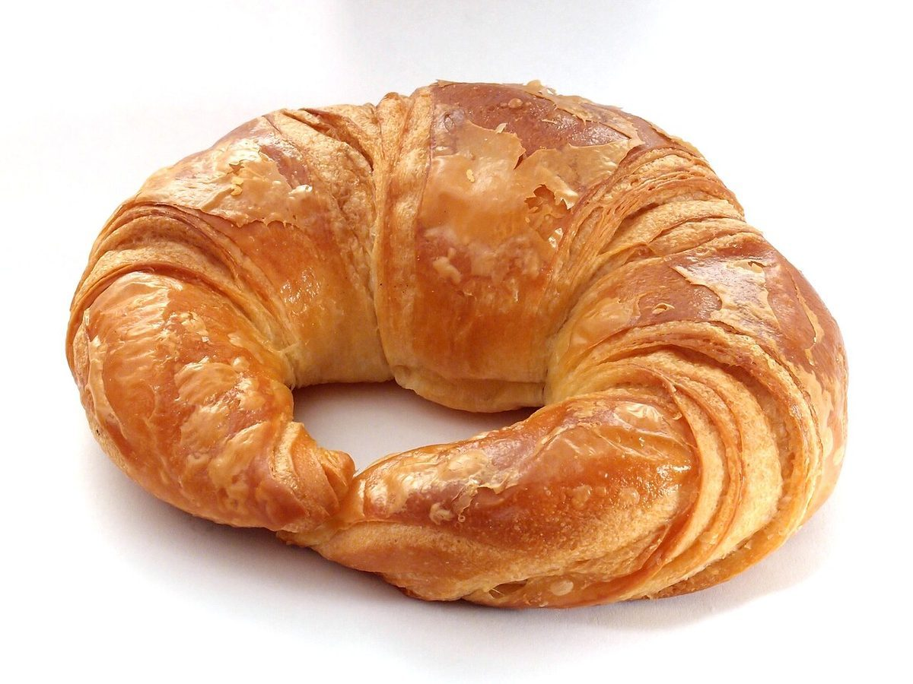

制作側の連想
「70」を、一本の線とひとつの輪に見立てる
「70」の意味は分かりません。制作側は、数字の見た目から「7」はまっすぐ斜めに伸びる線(バゲットのような細長いパン)、「0」はまるい輪(丸パンやリング状の生地)に見えると連想しました。このページはその見立てで作っています。お店の理念や由来とは関係のない、制作側の連想です。
安城市は愛知県の三河地方の市で、三河安城駅には新幹線が停まります。ただ、お店と駅や土地との関係は分かりません。
7 = 線
線のかたち
写真は安城市やこのお店のものではありません。細長いもの、切り口が線になるものを集めた、国外・撮影地不明のフリー素材のイメージです。


0 = 輪
輪のかたち
こちらも、まるいものを集めた国外・撮影地不明のフリー素材のイメージです。



ご案内
お店のこと(確認できたものだけ)
| 所在地 | 〒446-0059 愛知県安城市三河安城本町1丁目21 |
|---|---|
| 電話 | なし |
| 営業時間 | 準備中 |
| 定休日 | 準備中 |
| ご予約 | 準備中 |
| 駐車場 | 準備中 |
| SNS | Instagram @70bakery_aiti |